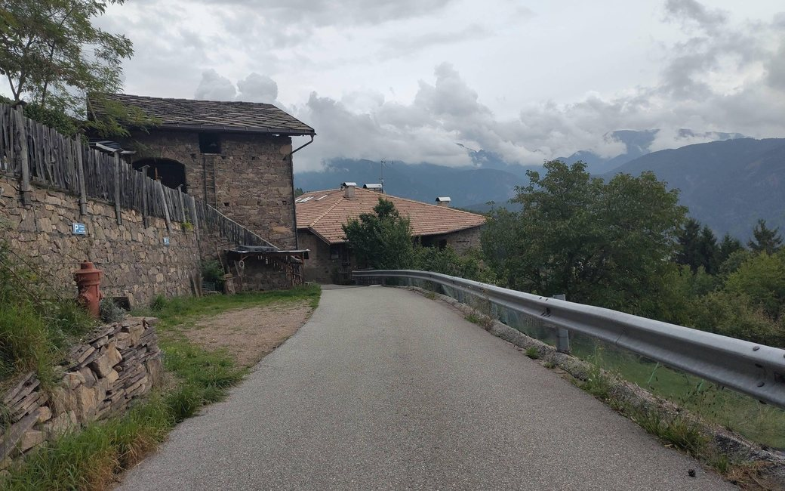

the walk up to the Masi di Grumes

A walk from Grumes up the quiet lanes to the Masi di Grumes, old farmsteads on the sunny slopes of the upper Val di Cembra, and back. The APT lists 6.8 km and 250 m of ascent.
Grumes (“Le Fontanelle” car park by the theatre), the APT’s start
This walk has no trail number of its own: follow these landmarks
Start in Grumes. The tourist board’s directions begin at the village square; it suggests parking at the free “Le Fontanelle” car park near the theatre.
Steps marked “tourist board”: Il Giro dei Masi di Grumes: directions, Fiemme and Cembra tourist board (visitfiemme.it), read 29 October 2026.
Start at the “Le Fontanelle” car park in Grumes: 6.8 km there and back, 250 m of climbing, about two and a half hours. The Italian rule applies: a lead of at most 1.5 m and a muzzle carried. Keep your dog close crossing the SS 612. Fountains in Grumes and on the way up; El Casèl dei Masi on the way.
The trail rating above describes the mountain, and it's the same for every dog. How it suits yours depends on their build, age and health. See this route's match — scored for a medium dog until you add your own, free and in a minute.
Before you go: the dog safety guide · water for dogs on trail · dogs on cable cars · meeting a guardian dog